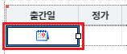
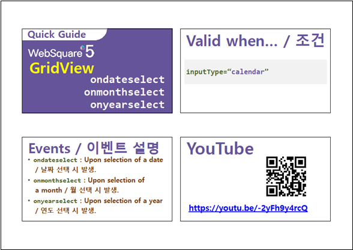

[GridView] Event - ondateselect (inputType이 calendar이고, 사용자가 달력 UI에서 '일'(day)를 선택했을 때 발생)
1개요
GridView의 이벤트 onDateSelect 예제입니다. 이 이벤트는 컬럼의 inputType이 'calendar'로 지정되고, 사용자가 달력 UI에서 '일'(day)를 선택했을 때 발생합니다. 이벤트 핸들러를 지정하면 핸들러에서 아래의 값을 확인할 수 있습니다. - 수정되고 있는 셀의 행 번호 - 수정되고 있는 셀의 열 번호 - 선택한 날짜의 문자열 - 선택한 날짜의 Date 객체
2구현된 기능
이벤트 ondateselect 발생 시 로그 출력하기
3예제 테스트 방법
3.1이벤트 ondateselect 발생 시 로그 출력하기
- STEP1. 컬럼 '출간일'의 셀을 편집 모드로 전환합니다.
영역 [이벤트 ondateselect 발생 시 로그 출력하기]의 GridView를 확인합니다.
컬럼 '도서명'의 2번째 행의 셀을 더블 클릭합니다.
셀이 편집 모드로 전환됩니다.
[브라우저(Chrome) 실행 예시]
- STEP2. 달력 UI에서 '일'(day)을 선택합니다.
편집 모드에서 아이콘 '달력'을 클릭합니다.
달력 UI가 노출됩니다.
[브라우저(Chrome) 실행 예시 - 달력 UI 노출]

달력 UI에서 '20'일을 선택합니다.
[브라우저(Chrome) 실행 예시 - 날짜 선택]

- STEP3. 실행 결과를 확인합니다.
ondateselect 이벤트가 발생되고 이벤트 핸들러가 실행되어 로그가 출력됩니다.
셀의 값이 '20220420'으로 변경됩니다.
[브라우저(Chrome) 실행 예시 - 로그 확인]
영역 [로그 확인] 또는 브라우저의 개발자 도구의 콘솔(console)탭에 출력된 로그를 확인합니다.
[로그 예시]
[08:11:13] ** scwin.grd_exam1_ondateselect **
row index : 1
column index : 0
selected date : 20220420
4구현 예시
4.1이벤트 ondateselect의 핸들러 지정하기
STEP1. GridView의 바디 컬럼의 속성을 정의합니다.
[필수] inputType="calendar"
[필수] dataType="date"
[선택] displayFormat="yyyy-MM-dd"
그림 1.웹스퀘어5 SP5 스튜디오의 Design 탭 예시 - 바디 컬럼 선택

그림 2.웹스퀘어5 SP5 스튜디오의 Property View(속성창) 예시 - 바디 컬럼

[소스 코드 예시]
<!-- gridView 의 소스 본문 예시 --> <w2:gridView id="grd_exam1"> <!-- 중략 --> <w2:gBody id="gBody1" style=""> <w2:row id="row2" style=""> <w2:column inputType="calendar" dataType="date" id="published_date" displayFormat="yyyy-MM-dd"></w2:column> <!-- 중략 --> </w2:row> </w2:gBody> </w2:gridView>
- STEP2. GridView의 이벤트 ondateselect 핸들러를 지정합니다.
예제 파일에서는 핸들러로 사용할 함수명을 scwin.grd_exam1_ondateselect로 정의하였습니다.
그림 3.웹스퀘어5 SP5 스튜디오의 Property View(속성창)의 이벤트 탭 예시
[소스 코드 예시]
<!-- gridView 의 소스 본문 예시 --> <w2:gridView ev:ondateselect="scwin.grd_exam1_ondateselect" id="grd_exam1"> <!-- 중략 --> </w2:gridView>
STEP3. 핸들러 함수 scwin.grd_exam1_ondateselect를 정의합니다.
[소스 코드 예시]
/** * GridView grd_exam1의 ondateselect 이벤트 핸들러 */ scwin.grd_exam1_ondateselect = function (row, col, dateStr, dateObj) { //row : 수정되고 있는 셀의 행 번호 //col : 수정되고 있는 셀의 열 번호 //dateStr : 선택한 날짜의 문자열 //dateObj : 선택한 날짜의 Date 객체 -> 개발자 도구 console에서 확인합니다. //console에 log 출력 console.log(row, col, dateStr, dateObj); };
5주요 API
ondateselect
[body column] inputType
[body column] dataType
6참고 문서
[웹스퀘어5 SP5 개발 가이드] GridView
링크 : https://docs1.inswave.com/sp5_user_guide/bc10c1b82c9a2a0b#e1c4658baf7e726f
[웹스퀘어5 SP5 개발 가이드] GridView ondateselect & onmonthselect & onyearselect
링크 : https://docs1.inswave.com/sp5_user_guide/86bdcf48029b958b#339fe3d04707cdf1
7참고 동영상
GridView ondateselect & onmonthselect & onyearselect
링크 : https://youtu.be/-2yFh9y4rcQ
